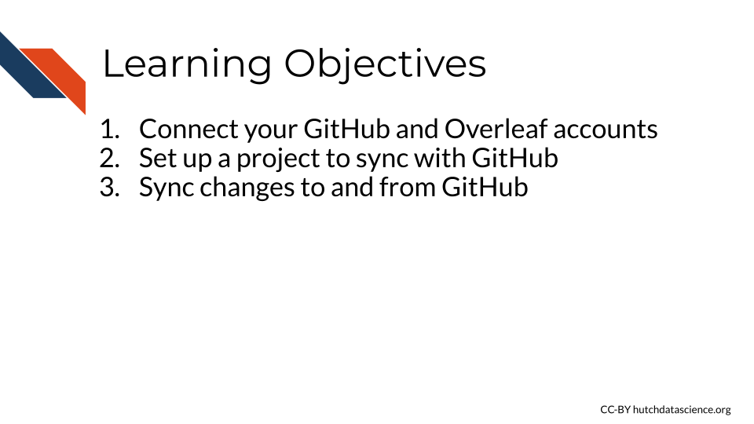
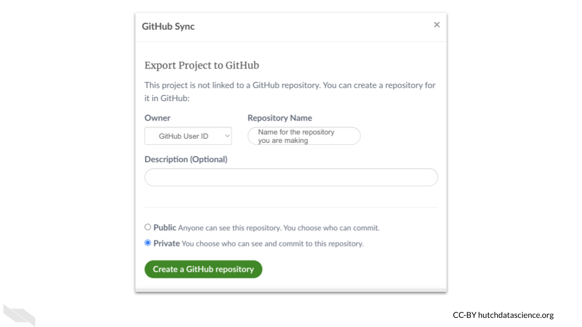

Chapter 8 Connecting to GitHub
If you have a paid version of Overleaf, then you can connect your projects to GitHub.
This can be really helpful for better understanding the history of a document overtime, especially if you already use GitHub.
We will not cover what GitHub is and how to use it in this chapter, but this resource can be helpful to get you started.
8.1 Learning Objectives

To do so, you need to first click on the home button (looks like an icon of a house on the upper left) to go to the main menu (if you are not already there, this will be the case if you working on a project).

Here you should see a list of any projects you have created or collaborated on.
On the far upper right click on the “Account” button.

Then click on “Account Settings”.

Next, scroll down to where you see the heading for “Project Synchronisation.”
Click on the blue “Link” button next to the GitHub section.

If you already have a GitHub account, you will be asked to grant access.
Now that you have connected your GitHub account with your Overleaf account, you can now set up a project to sync with GitHub.
To do so, first open the project that you would like to sync with GitHub from the project menu (the home icon button).
Next click the Overleaf menu button the far left upper corner.

Then scroll down to the “Sync” section.

The window that pops up about exporting the project to GitHub will then show up. This will create a new repository on GitHub with the files from your project.

8.2 Syncing files
If you then make a change on GitHub and merge it with the main branch, you can pull these changes back to Overleaf.
To do so, navigate back to the Overleaf Menu in the project on the far left side.
Scroll back down to the sync section for GitHub.
You will see a window with buttons to sync changes back and forth from GitHub and Overleaf.

Now to get the change from GitHub you can press the “Pull GitHub changes into Overleaf” button.
To do the opposite and send changes to GitHub from Overleaf, click on the lower button, “Push Overleaf changes to GitHub”.
8.3 Conclusion
We hope that this chapter has given you some guidance about how to connect GitHub with Overleaf.
Here are some of the major take-home messages:
- There are 3 steps to sync changes to and from a project on Overleaf with GitHub: connecting the your GitHub account and your Overleaf account, setting up a project to sync with Github, getting changes from each place.
- To do these syncs, you will do so for each project individually, and a repository will be made for each Overleaf project.
- You can make this repository private or public.
- To navigate to the menu to sync changes, go to the menu with the Overleaf icon on the far left upper corner when you have already opened a project.